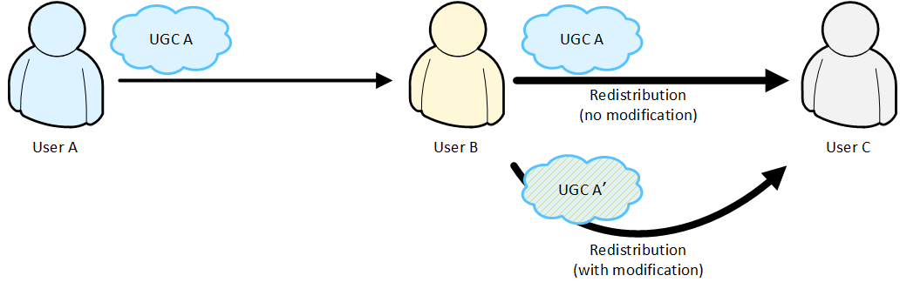
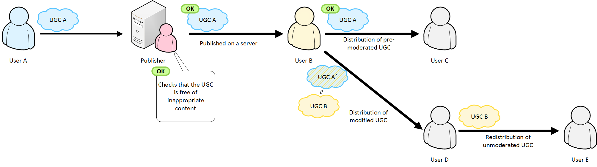
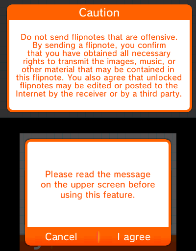
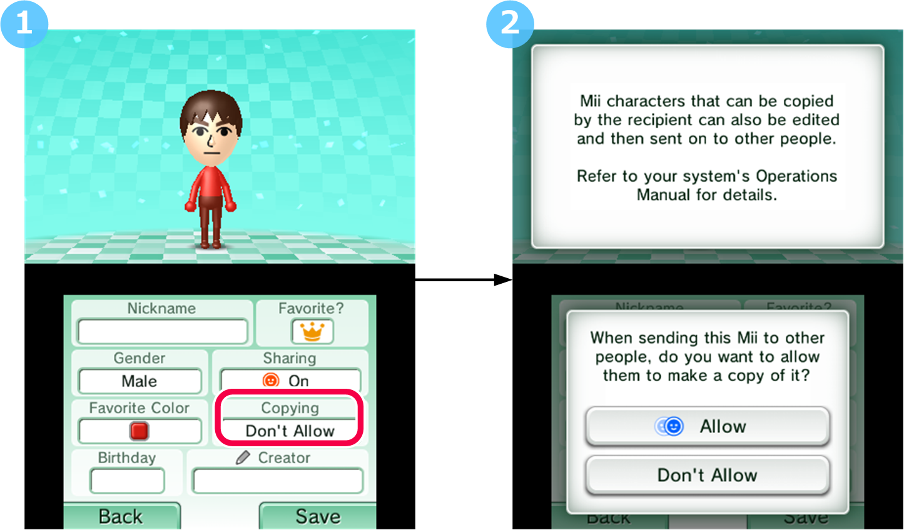

If users can receive UGC and easily pass it on to other users, this may lead to inappropriate UGC being spread widely in a way that becomes impossible to suppress. To avoid this, some released applications restrict redistribution so that UGC cannot be easily spread.
Redistribution refers to the act of receiving UGC from another user, and then sending it on to a third user.

In the figure showing Figure 4-1 Redistribution, User A creates UGC A and sends it to User B, and User B sends it on to User C.
It also counts as redistribution if User B modifies UGC A into UGC A', and then sends the modified UGC A' to User C.
If UGC that one user has made is distributed by someone else without the original user's permission, it could lead to copyright infringement or to inappropriate content being spread widely by repeated redistribution. In the following cases, however, it is considered unlikely that such unintended outcomes would arise.
|
Figure 4-2 Redistribution of UGC made publicly available on a server only after the publisher has checked that the content of the uploaded UGC is appropriate (Pre-moderated UGC)
 Here, User A creates UGC A, and the publisher confirms that it will cause no unintended outcomes to redistribute UGC A. Only after this pre-moderation is it made available as redistributable content for User B to send to User C. This means that when User B distributes UGC A to User C, they are distributing pre-moderated content. In this kind of distribution, the likelihood of unintended outcomes is relatively low in comparison to the case shown in Figure 4-1 Redistribution. On the other hand, if User B modifies UGC A into UGC A', then UGC A' has the same possibility of being inappropriate as if User B had created new UGC B. This means that when User B distributes UGC A' to User D, it is essentially the same as creating new UGC B and distributing it for the first time. Similarly, when User D sends UGC B to User E, it counts as redistribution of content that has not been moderated by the publisher. If your application permits redistribution of pre-moderated UGC, you must not allow redistribution of UGC that was modified after being pre-moderated (in this case, UGC B). |
In cases where prohibiting redistribution would drastically decrease the user's enjoyment of the game or have similar adverse consequences, some applications support redistribution but include countermeasures (for example, taking down UGC found to be inappropriate from the server to prevent it being spread any further). There are no means to suppress the spread of UGC if your application allows it to be redistributed via local communication, but if your application redistributes UGC via Internet communication, you can both implement redistribution and avoid unintended outcomes by designing your application with the handling and countermeasures above.
Additionally, to prevent UGC being spread without its creator's knowledge, Nintendo recommends having users select whether to allow their UGC to be redistributed, and prohibiting redistribution by default.
The following examples show explanations given to the user in applications that allow redistribution of UGC. These explanations ensure that before sending UGC, users understand that the content they have created may be further redistributed to others.
|
Example
|
Description of example
|
Types of UGC
|
|
|---|---|---|---|
|
Flipnote Studio 3D for Nintendo 3DS Scene where users are exchanging flipnotes over local communication
 |
In this scene, the application sends a flipnote to peers via local communication. The following message notifies the user that their creation may be redistributed, and gets their consent.
In this scene, the application sends UGC via local communication where peers can be identified beforehand. Redistribution is acceptable here because the peers and the UGC creator are right next to each other, and the peers can simply ask the creator whether redistributing their UGC is okay. |
Video (flipnotes can use photos, so they may contain camera data) | |
|
Mii Maker for Nintendo 3DS Scene where the user creates a Mii character
 |
In this scene, the application asks the user whether to allow other users to copy and modify the Mii character after the user sends it. If the user tries to change this setting, the application displays the following message to confirm whether to allow other users to copy the Mii character.
The default setting is to not allow copying ("Don't Allow"). |
Mii characters |
CONFIDENTIAL